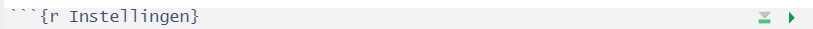

#Libraries inladen
# Het script maakt gebruik van een aantal packages
# Deze moeten bij de eerste keer lokaal worden geinstalleerd
# benodigde packages installeren als deze afwezig zijn
pkg_nodig = c("gt", "dplyr", "ggplot2", "tidyr", "haven", "stringr", "labelled",
"survey", "glue", "plotly", "forcats", "openxlsx", "showtext")
for (pkg in pkg_nodig) {
if (system.file(package = pkg) == "") {
install.packages(pkg)
}
}
# Hieronder worden de benodige packages geladen
library(gt)
library(dplyr)
library(ggplot2)
library(tidyr)
library(haven)
# etc...3 Standaard rapportage uitdraaien
Het is handig de volgende stappen te doorlopen wanneer je voor het eerst de rapportage gaat uitdraaien:
- Test eerst of het lukt om de voorbeeldrapportage uit te draaien. Onder R project openen en voorbeeldrapport uitdraaien wordt uitgelegd hoe je dit doet.
- Lukt dit, render dan de voorbeeldrapportage uit met je eigen data. Hieronder staat uitgelegd hoe je dit doet.
- Lukt dit ook, dan kun je de definitieve rapportage uitdraaien. Open hiervoor rechtsonder in Rstudio bij “Files” het bestand “Rapportage.qmd”. Zorg dat je ook hier correct verwijst naar je eigen databestanden (zie uitleg hieronder: Rapportage uitdraaien met eigen data).
Hieronder staat uitgelegd hoe de voorbeeldrapportage en de definitieve rapportage opgebouwd zijn. Een aantal standaard instellingen worden uitgelegd. Ook wordt uitgelegd hoe je je eigen data in kan laden en hoe je meerdere gemeenterapportages en PDF versies hiervan kunt uitdraaien. De voorbeeldrapportage en definitieve rapportage zijn grotendeels gelijk. Indien deze afwijken van elkaar, wordt dit genoemd.
3.1 Configuratie in frontmatter
De eigenschappen van Quarto documenten kunnen bovenaan in de YAML frontmatter ingesteld worden. In het voorbeeld hieronder wordt een inhoudsopgave ingesteld met de titel “Inhoudsopgave” en aan de rechterkant van het document geplaatst.
---
toc: true
toc-location: right
toc-title: "Inhoudsopgave"
---Open voorbeeld_rapportage.qmd. Daar zie je de volgende frontmatter staan:
---
title: ""
author: ""
lang: nl
format:
html:
page-layout: full
css: custom.css
toc: TRUE
toc-title: "Inhoud"
embed-resources: true
params:
gemeentecode: 2
regiocode: 23
regionaam: 'GGD Limburg-Noord' # Vul naam zoals in data CBS
path_nepdata: "nep testdata GMJV - Regionaal trendbestand 2022-2024.sav"
path_cbs_data: "voorbeeld_JongVolWassenenNaarGeslachtEnLeeftijd1Jan2024.xlsx"
path_monitor_data_2022: "C:/Users/.../" # Vul padnaam naar data 2022 in
naam_monitor_data_2022_regionaal: "Regiobestand_CGMJV2022_REGIO_versie 4.sav" # Vul naam regionaal bestand 2022 in
path_monitor_data_2024: "C:/Users/.../" # Vul padnaam naar data 2024 in
naam_monitor_data_2024_regionaal: "Regiobestand_GMJV2024_REGIO_versie 1.sav" # Vul naam regionaal bestand 2024 in
path_hulpfuncties: "hulpfuncties.R"
default_nvar: 100 # Minimum aantal invullers per vraag
default_ncel: 10 # Minimum aantal invullers oper antwoordoptie
default_kleuren_grafiek: !expr c("#86B443", "#012C17", "#B2BE97", "#007E48", "#AAD3CC", "#739BD0", "#11265F", "#86848D", "#CB8EB9", "#401B65", "#86848D")
default_kleuren_responstabel: !expr c("header" = "#012C17", "kleur_1" = "#007E48", "kleur_2" = "#76B82A","kleur_tekst" = "#FFFFFF")
is_pdf: false
format-links: false
echo: false
warning: false
message: false
---De meeste instellingen kan je laten staan. Het volgende moet aangepast of gecontroleerd worden:
3.1.1 Parameters onder ‘Params’
- gemeentecode: hier moet een gemeentecode ingevuld staan die bestaat in je data. Dit is als het ware je voorbeeldgemeente. Als je het rapport uitdraait via de “Render” knop zal een rapport voor die gemeente gemaakt worden.
- regiocode: hier moet de CBS code van je GGD-regio ingevoerd staan. Bij de nepdata staat dit op 23.
- regionaam: hier moet de naam van je GGD-regio ingevoerd staan. Zorg er voor dat deze naam overeenkomt met de naam van je regio in het bestand “JongVolWassenenNaarGeslachtEnLeeftijd1Jan2024.xlsx”. Bij de nepdata is dit GGD Limburg-Noord.
- path_..: voer hier de padnaam naar de map met bestanden in. Er kunnen 2 paths ingevuld worden: één voor de data van 2022 en één voor de data van 2024. path_nepdata, path_cbs_data en path_helpfuncties hoeven niet aangepast te worden.
- naam_..: voer hier de bestandsnaam van het regionale bestand in. Er kunnen 2 namen ingevuld worden: één voor de data van 2022 en één voor de data van 2024.
- default_nvar: hier is het algemene minimum aantal respondenten per vraag ingevoerd.
- default_ncel: hier is het algemene minimum aantal respondenten per antwoordoptie ingevoerd.
- default_kleuren_grafiek: hier is een vector in met de standaard kleurcodes voor grafieken ingevoerd.
- default_kleuren_responstabel: hier is een named vector ingevoerd met 4 kleurcodes als standaard voor responstabellen. Zie het voorbeeld voor de namen.
- is_pdf: dit staat standaard op false, zodat standaard geen pdfs uitgedraaid worden. Zie onderwerp ‘PDF uitdraai en Printbaarheid’ hieronder voor hoe je PDFs van de rapportage uitdraait.
3.1.2 Overige frontmatter instellingen
- lang: nl: de taal (language) waarin een screenreader de html moet lezen. Deze is standaard ingesteld op Nederlands (nl).
- css: custom.css: hier wordt aangegeven waar de opmaak (in css) gevonden kan worden. Zie ook het hoofdstuk CSS.
- path_hulpfuncties: “hulpfuncties.R”: hier wordt verwezen naar het R-script met functies.
- warning: Deze parameter staat in het voorbeeldrapport op false. Als de parameter op true staat worden mogelijke problemen / ‘warnings’ getoond in het rapport. Dit is meestal niet wenselijk voor het eindproduct, maar nuttig tijdens ontwikkeling.
Let op
Wees je ervan bewust dat eventuele problemen met het verwerken van de data NIET getoond worden als warning op false staat. Zorg ervoor dat deze parameter bij het ontwikkelen van het rapport op ‘true’ staat, zodat je op de hoogte bent van de warnings.
- echo: Standaard op false. Als deze parameter op true staat worden codeblokjes in het rapport getoond.
- message: Standaard op false. Als deze parameter op true staat worden berichten van packages getoond.
3.2 Rapportage uitdraaien met eigen data
Om de (voorbeeld)rapportage met eigen data uit te draaien moeten enkele aanpassingen gedaan worden in de frontmatter. Standaard wordt namelijk nepdata ingeladen. Dit is data die lijkt op de data van de Gezondheidsmonitor Jongvolwassenen, maar geen echte deelnemers bevat. Het nepdata bestand bevat data op landelijk, regio en gemeentelijk niveau en van onderzoeksjaren 2022 en 2024 (en is daarmee en trendbestand). De nepdata staat op github en wordt standaard meegedownload wanneer je de ‘repository’ gmjv-landelijk-format download. Het bestand heet nep ‘testdata GMJV - Regionaal trendbestand 2022-2024.sav’.
Om je eigen data te gebruiken i.p.v. de nepdata, moeten er 2 dingen gedaan worden:
- Frontmatter aanpassen
- Codeblok Instellingen aanpassen
3.2.1 Frontmatter aanpassen
In de frontmatter moet aangepast worden:
- gemeentecode: Voer hier een gemeentecode in die bestaat in je data. Dit is als het ware je voorbeeldgemeente. Als je het rapport uitdraait via de “Render” knop zal een rapport voor die gemeente gemaakt worden.
- regiocode: voer hier de CBS code van je GGD-regio in.
- regionaam: voer hier de naam van je GGD-regio in. Zorg er voor dat deze naam overeenkomt met de naam van je regio in het bestand “JongVolWassenenNaarGeslachtEnLeeftijd1Jan2024.xlsx”.
- path_monitor_data_2022: voer hier de padnaam naar de data van 2022 in en sluit af met een /.
- naam_monitor_data_2022_regionaal: voer hier de naam van het regionale databestand van 2022 in. Deze moet eindigen op .sav
- path_monitor_data_2024: voer hier de padnaam naar de data van 2024 in en sluit af met een /.
- naam_monitor_data_2024_regionaal: voer hier de naam van het regionale databestand van 2022 in. Deze moet eindigen op .sav
3.2.2 Codeblok Instellingen aanpassen
Scroll in de (voorbeeld)rapportage naar beneden tot je bij het eerste codeblok komt. Deze heet Instellingen en start met:
Iets verder in dit blok wordt de data ingeladen. Hier zijn 2 opties: nepdata inladen of eigen data inladen.
De nepdata wordt standaard ingeladen. Dit gebeurt met deze code:
## OPTIE 1: Nepdata
#Lees SPSS bestand & converteer 'user-missing' naar missing in R (NA)
monitor_df = haven::read_spss(params$path_nepdata, user_na =T) %>%
rename(Standaardisatiefactor_regio = Standaardisatiefactor,
Stratum_regio = Stratum) %>%
mutate(Standaardisatiefactor_gemeente = Standaardisatiefactor_regio,
Stratum_gemeente = Stratum_regio) %>%
labelled::user_na_to_na()
# Label toevoegen aan ongelabelde jaarindicator
val_label(monitor_df$AGOJB401, 2024) <- '2024'
val_label(monitor_df$AGOJB401, 2022) <- '2022'Als je je eigen, echte data wil inladen, moet dit stuk code in comments (#) gezet worden. R ziet dit dan als tekst en niet meer als code. De makkelijkste manier om dit te doen, is om alle regels te selecteren en dan CTRL + Shift + R in te drukken. Op deze manier worden alle regels in één keer een comment. Het ziet er dan zo uit:
# ## OPTIE 1: Nepdata
# #Lees SPSS bestand & converteer 'user-missing' naar missing in R (NA)
# monitor_df = haven::read_spss(params$path_nepdata, user_na =T) %>%
# rename(Standaardisatiefactor_regio = Standaardisatiefactor,
# Stratum_regio = Stratum) %>%
# mutate(Standaardisatiefactor_gemeente = Standaardisatiefactor_regio,
# Stratum_gemeente = Stratum_regio) %>%
# labelled::user_na_to_na()
#
# # Label toevoegen aan ongelabelde jaarindicator
# val_label(monitor_df$AGOJB401, 2024) <- '2024'
# val_label(monitor_df$AGOJB401, 2022) <- '2022'Vervolgens moeten we zorgen dat optie 2, de optie om eigen data in te laden, aan staat. Hiervoor moeten we alle comments weghalen van dit stuk. Ook daarvoor kun je alle code selecteren en op CTRL + Shift + R in drukken. Alle onderstaande code moet dan niet meer in comments staan:
## OPTIE 2: Eigen data invoeren (landelijk + regionaal)
#Data 2024
#Landelijk bestand inladen
df <- haven::read_spss(paste0(params$path_monitor_data_2024, "Totaalbestand_GMJV2024_GGD_versie 1 (N = 135.666).sav"),
user_na =T) %>%
labelled::user_na_to_na()
# Regionaal bestand inladen
df_regio <- haven::read_spss(paste0(params$path_monitor_data_2024, params$naam_monitor_data_2024_regionaal),
user_na =T) %>%
labelled::user_na_to_na()
# Check of aantallen gelijk zijn.
# NB. Alleen deelnemers met landelijke weegfactor zitten in landelijk bestand.
if (sum(df_regio$Standaardisatiefactor_regio != 0, na.rm = T) != nrow(df %>% filter(GGDregio == params$regiocode))) {
print("Aantal deelnemers in regio is niet hetzelfde in beide bestanden, check data.")
}
# Filter regio uit landelijk databestand
df <- df %>%
filter(GGDregio != params$regiocode)
# Voeg regiobestand toe aan landelijk bestand
monitor_df <- df %>%
full_join(df_regio)
# Opschonen
rm(df_regio, df)
#Data 2022
#Landelijk bestand inladen
df <- haven::read_spss(paste0(params$path_monitor_data_2022, "Totaalbestand_CGMJV2022_GGD_versie 3 (N = 69.750).sav"),
user_na =T) %>%
rename(Standaardisatiefactor_regio = Standaardisatiefactor,
Stratum_regio = Stratum) %>% # Standaardidatiefactor en andere indicatoren hernoemen. TODO weghalen na trendsyntax?
labelled::user_na_to_na()
# Regionaal bestand inladen
df_regio <- haven::read_spss(paste0(params$path_monitor_data_2022, params$naam_monitor_data_2022_regionaal),
user_na =T) %>%
rename(Standaardisatiefactor_regio = Standaardisatiefactor,
Stratum_regio = Stratum,
Invulduur = duur) %>% # Standaardidatiefactor en andere indicatoren hernoemen. TODO weghalen na trendsyntax?
labelled::user_na_to_na()
# Check of aantallen gelijk zijn.
# NB. Alleen deelnemers met landelijke weegfactor zitten in landelijk bestand.
if (sum(df_regio$Standaardisatiefactor_regio != 0, na.rm = T) != nrow(df %>% filter(GGDregio == params$regiocode))) {
print("Aantal deelnemers in regio is niet hetzelfde in beide bestanden, check data.")
}
# Filter regio uit landelijk databestand
df <- df %>%
filter(GGDregio != params$regiocode)
# Voeg regiobestand toe aan landelijk bestand
df <- df %>%
full_join(df_regio) %>%
select(-colnames(df)[!(colnames(df) %in% colnames(monitor_df))]) # selecteer alleen kolommen die ook in 2024 data zitten
# Voeg bestand van 2022 toe aan bestand van 2024
monitor_df <- monitor_df %>%
full_join(df)
# Opschonen
rm(df_regio, df)Om te testen of R de data goed inlaad, kun je het eerste codeblok los runnen. Dit doe je door in voorbeeld_rapportage.qmd naar het eerste codeblok ({r Instellingen}) toe te gaan en rechtsboven op de groene driehoek te klikken:

R runt nu alleen dit codeblok. Controleer of je errors krijgt. Veel voorkomende fouten:
- path_monitor_data_2022 en/of path_monitor_data_2024 eindigt niet op een / waardoor het bestand niet gevonden kan worden. Verander path_monitor_data_2022 en/of path_monitor_data_2024 in de frontmatter.
- De naam van het landelijke databestand uit 2022 en/of 2024 is aangepast, waardoor het bestand niet gevonden kan worden. Verander de naam het bestand in het codeblok, zie naar Totaalbestand_GMJV2022_(…) en Totaalbestand_GMJV2024_(…).
3.3 Regionale en/of landelijke rapportage maken
Standaard worden percentages in de (voorbeeld)rapportage getoond op regionaal en/of gemeentelijk niveau. Uitsplitsingen worden standaard op regionaal niveau getoond. Als je een regionale en/of landelijke rapportage wil maken, moet je dit aanpassen. Dit kan door het argument niveau of niveaus aan te passen in alle functies. Zie GMJV Functies gebruiken, Grafiekfuncties, Tekstfuncties en Overige functies voor meer informatie over functies en hun argumenten.
Tip
In Quarto bestanden werkt de CTRL + F shortkey ook. Hiermee kun je woorden zoeken en vervangen. Zoek bijvoorbeeld op “gemeente” om overal het niveau “gemeente” te vervangen.
3.4 Rapporten per gemeente uitdraaien
Als je het rapport uitdraait door op de “Render” knop te drukken wordt er één rapport gemaakt dat is ingesteld op de gemeentecode in de frontmatter. Dit is handig om eventuele wijzigingen in het rapport te testen. Als je rapporten voor alle gemeenten wilt uitdraaien volg je de volgende stappen
- Open maak_rapport_per_gemeente.R
- Controleer of de variabelen file_path en gemeentecodes_in_regio goed staan ingesteld
- Controleer of input goed ingesteld staat. Deze staat standaard op “voorbeeld_rapportage.qmd” maar mogelijk wil je dit wijzigen naar “Rapportage.qmd”.
- Draai de rest van de code.
Het script gaat met een loop langs alle gemeentecodes en maakt voor iedere gemeente een rapport.
3.5 PDF uitdraai en Printbaarheid
Op verzoek is het mogelijk gemaakt de rapportage als PDF op te slaan en te zorgen dat deze printbaar is. De eerste stap hiervoor is bedenken of het wel nodig is om het rapport te printen. Meestal is dat niet zo. Als het toch nodig blijkt volg je de onderstaande stappen.
Rapportages versturen
Wil je de rapportages via de mail delen? Kies dan niet voor html bestanden in de bijlage. Dit zijn vrij grote bestanden en sommige spam-filters zien html bestanden als spam. In plaats daarvan kun je in de mail verwijzen naar de website met de html-rapportage. Wil je toch bestanden meesturen met de mail? Draai dan de bestanden als PDF uit en voeg ze als PDF toe als bijlage.
3.5.1 Pagina-einden bepalen d.m.v. “Header 1”
In een browser bestaan pagina’s niet echt. De standaard html-uitvoer van het rapport heeft dan ook geen pagina’s. Wanneer je een rapport gaat printen zijn pagina-einden wel belangrijk. Daarom is voor deze rapportage ingesteld dat pagina-einden altijd vóór een kop van niveau 1 vallen.
Let daarom goed op dat je alleen een kop van niveau 1 maakt als je een nieuwe pagina wilt beginnen.
Waarschuwing
Controleer altijd de pdf-uitvoer op het mooi overlopen van pagina’s
Er zijn grenzen aan hoe veel er op één pagina past. Als je te veel grafieken of tekst onder een header van niveau 1 plaatst, zal alles wat niet past naar de volgende pagina gaan. Te veel inhoud onder één header kan dus alsnog voor een arbitraire overgang van paginas zorgen.
Aangepaste eigenschappen Header 1
Headers van niveau 1 krijgen voor de GMJV rapportage standaard een gekleurde achtergrond en beginnen (bij conversie naar pdf) altijd op een nieuwe pagina.
Dit zijn aangepaste eigenschappen die worden bepaald in het CSS-bestand “custom.css”. Je kan deze eigenschappen in dat bestand uitzetten of wijzigen. Zie ook het hoofdstuk CSS.
3.5.2 PDF uitdraaien
Als de pagina-einden goed ingesteld staan kan je de rapportage als PDF bestand uitdraaien. Let hierbij op dat je ten minste Google Chrome 128 hebt. Zie daarvoor ‘PDF-uitdraai’ in het hoofdstuk ‘Beginnen’.
- Open het bestand maak_pdf_rapport.R
- Controleer of de variabelen file_path, gemeentecodes_in_regio goed staan ingesteld.
- Controleer of input goed ingesteld staat. Deze staat standaard op “voorbeeld_rapportage.qmd” maar mogelijk wil je dit wijzigen naar “Rapportage.qmd”.
- Draai het hele script.
- Controleer de uitvoer.
3.6 HTML-rapporten uploaden naar Swing
Als je een html-bestand naar Swing upload en in de Viewer plaatst gaat dat niet automatisch goed. De layout van het bestand overhoop raken. Dit komt omdat de opmaak (CSS) van Swing zelf ook doorwerkt op het html-document. Dit kan je oplossen door raporten standaard in een ‘iframe’ te plaatsen. Dit is relatief makkelijk in te stellen in Swing.
- Log in bij Swing Studio als Admin
- Kies Viewer > Settings > Viewer Settings
- Zoek de optie “Show report in an iframe” en vink deze optie aan